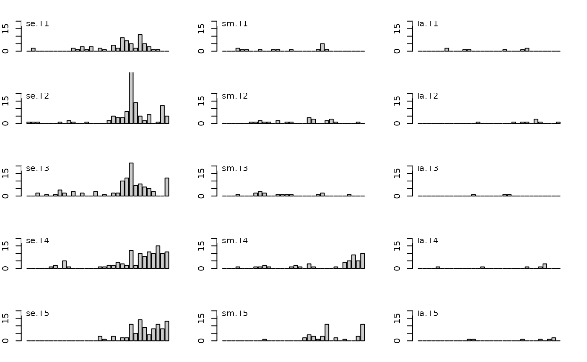

Spatial pattern analysis in plant communities
acacia.RdCounts of individuals of Acacia ehrenbergiana from five parallel transects of 32 quadrats.
Usage
data(acacia)Format
acacia is a data frame with 15 variables :
se.T1, se.T2, se.T3, se.T4, se.T5 are five numeric vectors containing quadrats counts of
seedlings from transects 1 to 5 respectively;
sm.T1, sm.T2, sm.T3, sm.T4, sm.T5 are five numeric vectors containing quadrats counts of
small trees (crown < 1 \(m^{2}\) in canopy) of transects 1 to 5 respectively;
la.T1, la.T2, la.T3, la.T4, la.T5 are five numeric vectors containing quadrats counts of
trees with large crown (crown > 1 \(m^{2}\) in canopy) of transects 1 to 5 respectively.
Source
Greig-Smith, P. and Chadwick, M.J. (1965) Data on pattern within plant communities. III. Acacia-Capparis semi-desert scrub in the Sudan. Journal of Ecology, 53, 465–474.
References
Hill, M.O. (1973) The intensity of spatial pattern in plant communities. Journal of Ecology, 61, 225–235.
Examples
data(acacia)
if(adegraphicsLoaded()) {
gg <- s1d.barchart(acacia, p1d.horizontal = FALSE, psub.position = "topleft",
plabels.cex = 0, ylim = c(0,20))
} else {
par(mfcol = c(5, 3))
par(mar = c(2, 2, 2, 2))
for(k in 1:15) {
barplot(acacia[, k], ylim = c(0, 20), col = grey(0.8))
ade4:::scatterutil.sub(names(acacia)[k], 1.5, "topleft")
}
par(mfcol = c(1, 1))
}
